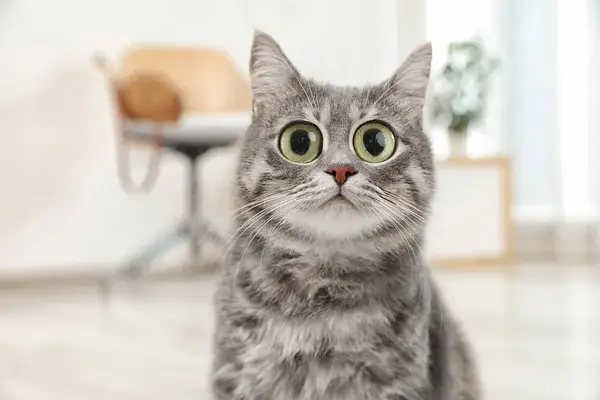

Datos curiosos

Te presento 10 datos curiosos sobre los gatos:
- Los gatos tienen una clavícula incompleta que les permite pasar por espacios muy estrechos. Por esta razón, pueden parecer que no tienen huesos en el cuerpo.
- Los gatos tienen 5 dedos en las patas delanteras, pero solo 4 en las patas traseras. Además, algunos gatos tienen dedos extras, lo que se conoce como "polidactilia".
- Los gatos tienen una membrana en los ojos llamada "tercer párpado" que les protege y ayuda a mantener sus ojos hidratados.
- Aunque los gatos tienen fama de ser animales solitarios, en realidad son muy sociales y pueden formar vínculos cercanos con otros gatos y humanos.
- Los gatos pueden correr a velocidades de hasta 48 km/h, lo que los convierte en animales muy ágiles y rápidos.
- Los gatos tienen un sentido del oído muy agudo y pueden escuchar sonidos de alta frecuencia que los humanos no pueden detectar.
- Los gatos tienen un sentido del olfato muy desarrollado y pueden detectar olores muy débiles, como el de una pequeña cantidad de hierba gatera.
- Los gatos pueden dormir hasta 16 horas al día y algunos pueden incluso dormir más de 20 horas.
- Los gatos pueden mover sus orejas independientemente para escuchar sonidos en diferentes direcciones.
- Los gatos tienen una lengua muy áspera y rugosa que les ayuda a limpiarse el pelaje y a retirar restos de comida de su boca. Además, tienen papilas gustativas en la lengua que les permiten detectar sabores dulces, salados, amargos y ácidos.